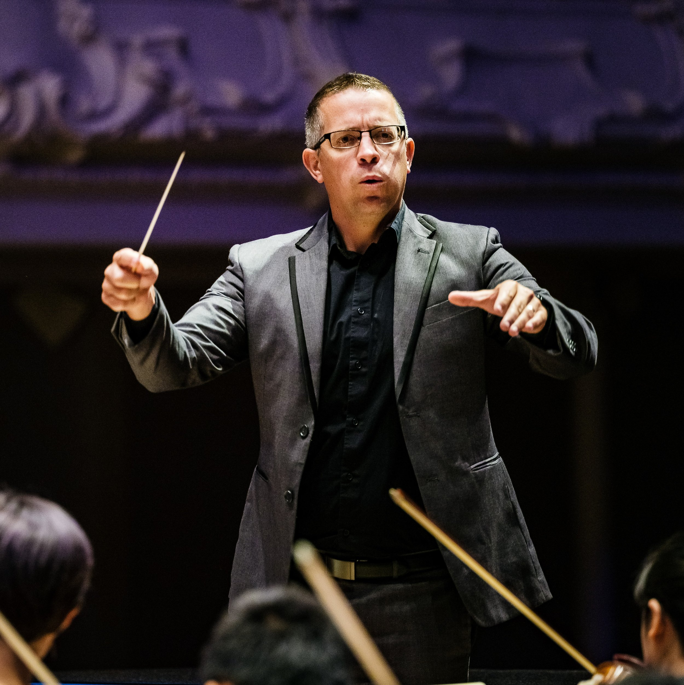
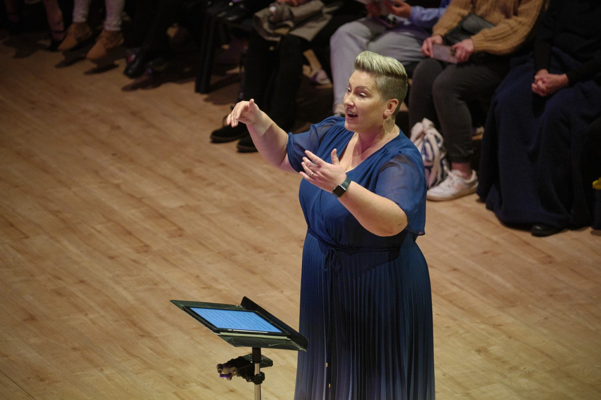

Meet the conductors and tutors leading each ensemble.
Apply now
OrchestrasDavid Kay holds a Bachelor of Music (Honours) in Performance Horn from the University of Auckland, and a Postgraduate Diploma in Orchestral Studies from the Guildhall School of Music and Drama, London. He made his conducting debut with the Auckland Philharmonia Orchestra (APO) in 2009 and has conducted regularly with the APO since. He has been musical director of the North Shore Junior Orchestra since 2002 and of the North Shore Youth Orchestra since 2009, made his debut with the Christchurch Symphony Orchestra in 2012 and with the St Matthew's Chamber Orchestra in 2011, was a guest conductor for the University of Auckland Academy of Music in 2006, and is frequently invited to conduct rehearsals and workshops with local schools.
He is Sub-Principal Horn in the Auckland Philharmonia Orchestra, and was Principal Horn of the National Youth Orchestra from 2002–2004.

ChoirsVanessa Kay is musical director of North Shore Voices, which includes the North Shore Youth Choir, North Shore Children's Choir, Con Brio and the North Shore Songsters. She teaches music at Westlake Girls' High School, where she conducts two of the school choirs, and is an award-winning conductor — her Notables ensemble from Murrays Bay Intermediate won at the 2017 Kids Sing competition.
Vanessa completed a BMus (Hons) in Conducting and Musicology at the University of Auckland and a Postgraduate Diploma of Secondary Teaching at Dunedin College of Education. She has adjudicated at Kids Sing (2011) and the Sing Down Under Festival (2011–12), guest-conducted at the University of Auckland Academy of Music, and trained as a conductor with the Tower New Zealand Youth Choir. As a singer, she has performed with the Auckland Chamber Choir and, from 2000–2007, with the Tower New Zealand Youth Choir, touring America, Russia, Canada and Europe.